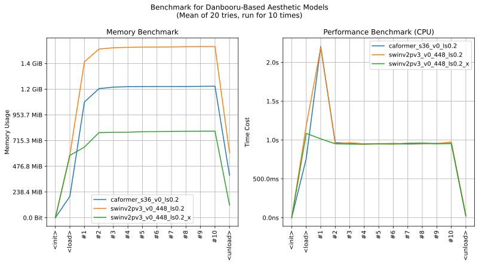

imgutils.metrics.dbaesthetic
- Overview:
A tool for assessing the aesthetic quality of anime images using a pre-trained model, based on danbooru dataset and metadata analysis result of HakuBooru by KohakuBlueleaf.

This is an overall benchmark of all the operations in aesthetic models:

anime_dbaesthetic
- imgutils.metrics.dbaesthetic.anime_dbaesthetic(image: str | PathLike | bytes | bytearray | BinaryIO | Image, model_name: str = 'swinv2pv3_v0_448_ls0.2_x', fmt=('label', 'percentile'))[source]
Analyzes the aesthetic quality of an anime image using a pre-trained model.
- Parameters:
image (ImageTyping) – The input anime image.
model_name (str) – The name of the aesthetic assessment model to use. Default is _DEFAULT_MODEL_NAME.
fmt (Tuple[str, ...]) – The format of the output. Default is (‘label’, ‘percentile’).
- Returns:
A dictionary containing the aesthetic assessment results.
- Return type:
Dict[str, float]
- Examples::
>>> from imgutils.metrics import anime_dbaesthetic >>> >>> anime_dbaesthetic('masterpiece.jpg') ('masterpiece', 0.9831666690063624) >>> anime_dbaesthetic('best.jpg') ('best', 0.8810615667538594) >>> anime_dbaesthetic('great.jpg') ('great', 0.8225559148288356) >>> anime_dbaesthetic('good.jpg') ('good', 0.591020403706702) >>> anime_dbaesthetic('normal.jpg') ('normal', 0.2888798940585766) >>> anime_dbaesthetic('low.jpg') ('low', 0.243279223969715) >>> anime_dbaesthetic('worst.jpg') ('worst', 0.005268185993767627)
Custom format
>>> anime_dbaesthetic('masterpiece.jpg', fmt=('label', 'percentile', 'score')) ('masterpiece', 0.9831666690063624, 5.275707557797432) >>> anime_dbaesthetic('best.jpg', fmt=('label', 'percentile', 'score')) ('best', 0.8810615667538594, 4.7977807857096195) >>> anime_dbaesthetic('great.jpg', fmt=('label', 'percentile', 'score')) ('great', 0.8225559148288356, 4.56098810210824) >>> anime_dbaesthetic('good.jpg', fmt=('label', 'percentile', 'score')) ('good', 0.591020403706702, 3.670568235218525) >>> anime_dbaesthetic('normal.jpg', fmt=('label', 'percentile', 'score')) ('normal', 0.2888798940585766, 2.1677918508648872) >>> anime_dbaesthetic('low.jpg', fmt=('label', 'percentile', 'score')) ('low', 0.243279223969715, 1.9305131509900093) >>> anime_dbaesthetic('worst.jpg', fmt=('label', 'percentile', 'score')) ('worst', 0.005268185993767627, 0.6085879728198051)
Get confidence
>>> anime_dbaesthetic('masterpiece.jpg', fmt='confidence') {'masterpiece': 0.6834832429885864, 'best': 0.16141420602798462, 'great': 0.05435194447636604, 'good': 0.025083942338824272, 'normal': 0.024000568315386772, 'low': 0.027076328173279762, 'worst': 0.024589713662862778} >>> anime_dbaesthetic('best.jpg', fmt='confidence') {'masterpiece': 0.3757021427154541, 'best': 0.3451208472251892, 'great': 0.1511985808610916, 'good': 0.04740551486611366, 'normal': 0.02172713913023472, 'low': 0.027498546987771988, 'worst': 0.03134724497795105} >>> anime_dbaesthetic('great.jpg', fmt='confidence') {'masterpiece': 0.39281174540519714, 'best': 0.22457796335220337, 'great': 0.15563568472862244, 'good': 0.10796019434928894, 'normal': 0.047730278223752975, 'low': 0.0393439345061779, 'worst': 0.031940147280693054} >>> anime_dbaesthetic('good.jpg', fmt='confidence') {'masterpiece': 0.13832266628742218, 'best': 0.20687267184257507, 'great': 0.2509062886238098, 'good': 0.1644320785999298, 'normal': 0.11332042515277863, 'low': 0.08270663768053055, 'worst': 0.043439216911792755} >>> anime_dbaesthetic('normal.jpg', fmt='confidence') {'masterpiece': 0.033693961799144745, 'best': 0.03375888615846634, 'great': 0.050045162439346313, 'good': 0.16734018921852112, 'normal': 0.4311050772666931, 'low': 0.23242227733135223, 'worst': 0.05163438618183136} >>> anime_dbaesthetic('low.jpg', fmt='confidence') {'masterpiece': 0.012833272106945515, 'best': 0.01619996316730976, 'great': 0.03074900433421135, 'good': 0.1396280825138092, 'normal': 0.5038207173347473, 'low': 0.22299200296401978, 'worst': 0.07377689331769943} >>> anime_dbaesthetic('worst.jpg', fmt='confidence') {'masterpiece': 0.02854202501475811, 'best': 0.026677291840314865, 'great': 0.02838410809636116, 'good': 0.026617199182510376, 'normal': 0.02508518099784851, 'low': 0.06039097160100937, 'worst': 0.8043031692504883}